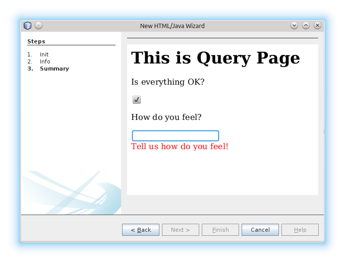

Apache NetBeans
Apache NetBeansHtmlUIForTemplates
Note: These pages are being reviewed.
Goals
-
Play well with 247926 - e.g. templates independent from data loaders
-
Be able to use the wizard values in templating engines - e.g. freemarker
-
Plug into NetBeans wizard API
-
Be embeddable into browser based environment
Your Portable HTML5 Wizard
To register your HTML based wizard with your template, use @TemplateRegistration annotation and provide reference to your HTML page:
public class X {
@TemplateRegistration(
page = "cz/xelfi/test/x.html",
scriptEngine = "freemarker",
displayName = "JS Wizard",
folder = "Other",
content = "x.fmk"
)
public static String jsWizard() {
return "init();";
}
}the return value of the annotated method should of type String and its content should be snippet of JavaScript code to execute inside of your specified HTML page (e.g. x.html) to create an instance of KnockoutJS model to drive the wizard. Here is the sample of the model:
function init() {
var ok = ko.observable(false);
var msg = ko.observable('');
var current = ko.observable('Init');
var data = {
'errorCode': ko.computed(function() {
if ('Init' == current()) return 0;
if (!ok()) return 1;
if (msg()) return 0;
return 2;
}),
'steps': ko.observableArray([ 'Init', 'Info', 'Summary']),
'current': current,
'ok': ok,
'msg' : msg
}
return data;
}it defines wizard composed of three panels (observable steps) and a verification function (registered as errorCode) to check if everything is OK. In addition to that it defines proprietary text value msg which is going to be filled by the wizard and cannot be empty.
Each page of the wizard is registered as a KnockoutJS template named according to the name of the specified step. A dummy initial page:
<script type="text/html" id="Init">
<h1>This is Initial Page</h1>
<p>
JavaScript will ask you few questions about your mood.
</p>
</script>an interactive page with checkbox and an input field:
<script type="text/html" id="Info">
<h1>This is Query Page</h1>
<p>
Is everything OK?
</p>
<input type="checkbox" data-bind="checked: ok"/>
<p>How do you feel?
</p>
<input type='text' data-bind="value: msg"/>
</script>and a simple summary page showing the specified values:
<script type="text/html" id="Summary">
<h1>This is Summary Page</h1>
<p>
You are feeling <span data-bind="text: msg"></span>!
</p>
</script>The Next/Finish buttons can be controlled by the errorCode property. If it is non-zero, there is an error and these buttons are disabled. Also once can use that inside of the HTML page to display user related errors:
<div data-bind="visible: errorCode() == 1">
<span style="color: red">Please check you are OK!</span>
</div>
<div data-bind="visible: errorCode() == 2">
<span style="color: red">Tell us how do you feel!</span>
</div>The L10N of the wizard is done on the level of HTML pages. The whole page gets translated into different language with appropriate suffix x_cs.html and it is then selected instead of the default one, when user runs in such locale.
When the wizard is successfully finished, all the values specified in the model are transfered to the templating engine, so they can influence the content of created files. Here is a sample x.fmt content which reuses the msg value provided by the wizard:
Hi,
I am Freemarker.
I feel ${wizard.msg}.System of this kind is portable between existing NetBeans infrastructure (see branch WizardFor247926 in ergonomics repository) as well as demo of embedding the same wizard into browser (see on-line demo).
Your Portable Html4Java Wizard
Some people prefer JavaScript, some would rather stick with Java. There is a way to provide the same model for the HTML wizard in Java, just use NetBeans Html4Java APIs:
@Model(className = "Y", properties = {
@Property(name = "steps", type = String.class, array = true),
@Property(name = "current", type = String.class),
@Property(name = "ok", type = boolean.class),
@Property(name = "msg", type = String.class)
})
public class YCntrl {
@ComputedProperty static int errorCode(
String current, boolean ok, String msg
) {
if ("Init".equals(current)) return 0;
if (!ok) return 1;
if (msg == null || msg.isEmpty()) return 2;
return 0;
}
@TemplateRegistration(
page = "cz/xelfi/test/x.html",
scriptEngine = "freemarker",
displayName = "HTML/Java Wizard",
folder = "Java",
content = "x.fmk"
)
public static Y jsWizard() {
return new Y("Init", false, "",
"Init", "Info", "Summary"
);
}
}The HTML page remains the same (just remove the JavaScript code) and the application logic is written in Java. Here is a picture showing how the most interactive page looks like when embedded into NetBeans:

The picture is identical to the one generated by pure JavaScript driven wizard. Yet one can code and test in a type-safe Java. The result still remains portable as, thanks to Bck2Brwsr and other virtual machines like TeaVM, we are capable to run such code in a browser as well.
Inception Review
The issue is tracked as 248418 and inception review happened on Dec 1, 2014. The following TCRs and TCAs were raised and fixed:
-
Avoid knockout templates - uses custom ko binding: http://hg.netbeans.org/ergonomics/rev/c5ec0030bd76
-
Filter control data - done as http://hg.netbeans.org/ergonomics/rev/31f42048137a
-
Support for progress bar - this has evolved into supporting validation - done as http://hg.netbeans.org/ergonomics/rev/3c0135fb4681
-
Do not depend on JavaFX - done https://hg.netbeans.org/ergonomics/rev/6576fe363d45
-
Prepare Technology Compatibility Kit - done http://hg.netbeans.org/ergonomics/rev/c2fce646315b
Final Review
We went through all the previous requirements on Dec 18, 2014 and found their implementation sufficient from an architecture perspective. In addition to that we also got a showcase of apisupport wizard to generate the new wizard: http://hg.netbeans.org/ergonomics/rev/c46aa831443d
The whole project seem to be ready for use by NetBeans platform users and was approved for integration, given following is done:
-
arch.xml is enhanced with usecases which are currently in the wiki
-
keep in mind the 'global initialization' issue.
Early adopters (like the JBossForge guys) may start testing this technology by end of 2014.
Global Initialization Issue
Currently the JavaScript version of the wizard initializes itself in the HTML page. While this is OK for NetBeans, it may not be acceptable for other (browser with requirejs) environments. Such global initialization might cause name clashes and we need a way to avoid them.
It has been demonstrated that one can avoid it by returning the whole JavaScript initialization code from the method annotated by @TemplateRegistration. So solution exists.
Of course it is not suitable for browser like environment as they may not have the Java method at all. But we will only see once we prototype such browser solutions. Then we will update the "wizard generating the HTML/JS wizard" to layout files more properly so sharing between different environments gets even smoother.
|
The content in this page was kindly donated by Oracle Corp. to the Apache Software Foundation. This page was exported from http://wiki.netbeans.org/HtmlUIForTemplates , that was last modified by NetBeans user Jtulach on 2014-12-22T10:15:41Z. This document was automatically converted to the AsciiDoc format on 2020-03-12, and needs to be reviewed. |